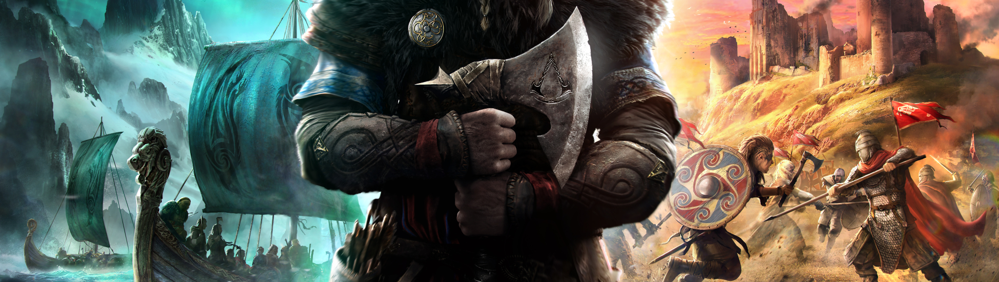
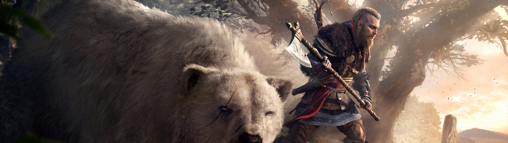

Assassin's Creed regresa con un gigantesco y entretenido RPG que sobresale una vez más con su fantástica ambientación, pero que en lo jugable y lo narrativo repite los mismos aciertos y errores de sus antecesores.
En la que ya podemos llamar la pasada generación, la popular saga de Ubisoft no arrancó demasiado bien con los accidentados Assassin's Creed Unity (2014) y Assassin's Creed Syndicate (2015), y se tuvieron que tomar un respiro para reinventar la fórmula y traernos el estimable Assassin's Creed Origins (2017), que convertía lo que hasta el momento habían sido aventuras de acción de mundo abierto en un gigantesco RPG, algo que vimos todavía más remarcado en el celebrado Assassin's Creed Odyssey (2018). Ahora, para cerrar la trilogía de Assassin's Creed "thewitcherizados", y con un pie en la pasada y la nueva generación, llega Assassin's Creed Valhalla, que repite lo visto en los dos anteriores con sutiles cambios y novedades para ofrecer de nuevo un juego inmenso, que vuelve a dar más importancia a la cantidad que a la calidad de sus contenidos, algo con lo que parece que los jugadores están bastante contentos.
Si algo funciona para qué cambiarlo habrán pensado en Ubisoft, y si os gustó Odyssey este también os convencerá, ya que incluso pule algunas de sus asperezas y es una aventura más centrada, mejor estructurada y con menos paja, al menos de manera aparente. También es el tercero que repite esta fórmula, y tras cientos de horas de lo mismo puede que la propuesta os empiece a cansar, o simplemente que su ambientación no os resulte tan atractiva como las antiguas civilizaciones egipcias y griegas, que dan paso ahora a los vikingos.
En cuanto a ambientación Assassin's Creed Valhalla da un gran salto hacia adelante, pasando de las antiguas civilizaciones al más reciente siglo IX después de Cristo, en una Gran Bretaña sumida en el caos e invadida por los vikingos, entre otros pueblos. Nosotros nos pondremos en la piel de Eivor -hombre o mujer, como prefiramos-, un vikingo que lidera a su clan en una de estas invasiones, y que creará un nuevo hogar para su pueblo en las tierras de Inglaterra. Para ello no solo emplearemos la fuerza bruta en multitud de batallas, sino también, y sobre todo, la diplomacia, forjando alianzas con diferentes bandos, por lo que tendremos que derrocar y poner reyes urdiendo todo tipo de tejemanejes políticos en un puro y duro juego de tronos. También hay ciertos intentos de conectar esta entrega con el resto de la saga y traer de vuelta el viejo conflicto de los Asesinos y los Templarios, algo que nos parece que está hecho de una manera un tanto forzada, pero que seguro agradará a los fans más veteranos.
Así, con un mapa dividido en diferentes regiones, nos encontramos varias campañas o arcos argumentales con sus diferentes personajes y tramas, casi como si se trataran de temporadas de una serie, que se cierran cuando hemos logrado esa alianza, asentándonos poco a poco en Inglaterra mientras conseguimos que prospere nuestro asentamiento. Esta estructura ayuda a que sea un juego más ordenado y centrado que Odyssey, teniendo muy claro en todo momento cuáles son nuestros objetivos, qué estamos haciendo y para qué lo estamos haciendo. Pero esto también se cobra cierto precio, como un protagonista bastante desdibujado y en muchos momentos en un segundo plano, que no cuenta con un buen desarrollo, y con algunos de estos arcos argumentales con más interés que otros, y que se pueden llegar a hacer en ocasiones un poco pesados con tanto politiqueo, sobre todo cuando llevas muchas horas y se empieza a repetir esta estructura.
Más allá de esto, también hay un buen lugar para la mitología nórdica tan de moda últimamente en los videojuegos, de una manera que no os vamos a desvelar porque es bastante sorprendente, y en líneas generales la ambientación de esta entrega -como siempre- nos ha parecido un acierto, es un periodo histórico realmente interesante y que han sabido explotar en todas sus vertientes, aunque evidentemente no sea tan atractivo como el de las dos entregas anteriores, aunque si recuerda más al de las primeros juegos de la saga, con sus castillos y reyes, ya a tan solo tres siglos de distancia de la entrega primigenia.
Es una pena que ya tengamos que dar por hecho, como algo irremediable, que la historia no sea ninguna maravilla y que no pueda tener personajes o momentos memorables, como si se tratara de algún tipo de incompatibilidad o imposibilidad de la propia saga y en general de los productos de esta compañía. Lo de las historias de los juegos de Ubisoft es como esos partidos de fútbol en los que ves de manera clara que uno de los equipos -o los dos- puede estar jugando durante horas hasta bien entrada la madrugada que no van a ser capaces de marcar un gol; en estos momentos da la sensación es de que Ubisoft puede estar sacando juegos durante las próximas décadas que no vamos a encontrar en ellos una historia que merezca la pena. Y esto es especialmente grave en un RPG que le da tanto peso a la narrativa.
La fórmula jugable en Valhalla es la misma de los dos anteriores Assassin's Creed, y vuelve a apostar por un sistema de combate que en esta ocasión podemos calificar de correcto, sin más, en el que unos enemigos bastante tontorrones y con unos patrones de ataques demasiado previsibles es raro que te pongan en aprietos, pero a los que da gustito despachar con la fiereza de nuestro vikingo, que arranca brazos y cabezas con unos movimientos muy espectaculares. Como novedad respecto a Odyssey vuelven los escudos, algo que parece que no pero cambia un poco el ritmo de los combates, el hecho de poder equipar el arma que queramos en cada brazo, o armas a dos manos, creando diferentes tipos de combinaciones, la posibilidad de apuntar con el arco a punto débiles de los rivales, a los que si acertamos los dejamos aturdidos, o un nuevo sistema de salud mediante objetos, que nos ha gustado. De las tres últimas entregas, Valhalla tiene el sistema de combate más pulido, aunque siga sin parecernos ninguna maravilla.
Para mejorar y hacer crecer nuestro asentamiento necesitamos recursos, y para ello deberemos realizar saqueos, asaltando monasterios o pequeños campamentos costeros con nuestro ejército de vikingos, que comienzan de manera muy épica, con nuestro protagonista tocando el cuerno y sus compañeros de batalla lanzándose a gritos hacia la costa mientras la gente huye despavorida, pero cuya epicidad se acaba pronto al ver interactuar de manera torpona a las decenas de personajes, tanto aliados como enemigos. Si ya es un juego que tiene problemas en las batallas con pocos enemigos, imaginaos cuando se vuelven masivas, con una inteligencia artificial que deja mucho que desear, en cualquiera de las situaciones, también en los momentos más pausados de sigilo.
Al sigilo se le ha intentando dar un poco más de relevancia jugable que en las dos anteriores entregas, recuperando mecánicas de los comienzos de la saga, como ponernos la capa para reducir el alcance de detección de los enemigos, intentar mezclarnos con los transeúntes o crear distracciones. Es curioso que con estos ingredientes hemos jugado menos que nunca con sigilo, ya que el diseño de misiones casi nunca invita a ello y pocas veces le ves la ventaja, más que perder unos minutos en algo que podrías resolver en unos segundos a hachazo limpio. Quiere ser todo, ese enorme RPG de acción de las dos últimas entregas y también volver un poco a los orígenes jugable, y la verdad es que no le funciona y estos toques de infiltración acaban quedando en anécdota, como tantos aspectos en una aventura que quiere ofrecer muchas, muchísimas cosas, pero que no se toma casi ninguna demasiado en serio (minijuegos de dados, de pesca, de beber, vuelve la caza de animales excepcionales, anomalías del Animus en forma de puzles, y por haber hay hasta duelos de insultos, a lo Monkey Island).
Nosotros hemos jugado a la versión de Xbox Series X, y agradecemos y mucho la apuesta de Ubisoft por ofrecer la versión de nueva generación a 60fps, algo que no habíamos podido disfrutar nunca en un juego de la saga en consolas -y casi en ningún título de mundo abierto en general- y que se agradece un montón. Eso sí, en estos momentos la versión de Series X tiene problemas gravísimos de tearing o falta de sincronización vertical, tanto es así que no habíamos visto nada parecido desde los tiempos de Xbox 360 y PS3, y es un fallo tan grande que estamos seguros que le acabarán poniendo remedio con algún parche.
La banda sonora, a cargo de un viejos conocidos como Jesper Kyd (Assassin's Creed II), Sarah Schachner (Assassin's Creed Origins) y Einar Selvik (Vikings), está muy muy bien, ambienta de manera fantástica, y el doblaje al español es como siempre, repleto de altibajos, con un montón de voces fuera de lugar que muchas veces te sacan de la experiencia, algo que se suele perdonar al tener en cuanto el descomunal tamaño del juego.
Assassin's Creed Valhalla no decepcionará a los que disfrutaron de las dos últimas entregas. Es un RPG de acción inmenso que se desarrolla en una ambientación muy atractiva, y aunque no destaca en lo jugable ni en lo narrativo, regodeándose en la repetitividad de sus contenidos, lo cierto es que es muy entretenido, volviendo a apostar por una fórmula que ha conectado con millones de jugadores, por más pegas que podamos ponerle. De hecho, en varios aspectos nos ha gustado más que Odyssey, pero llega dos años más tarde, y el continuismo, en esta tercera parte de la trilogía RPG, tiene menos perdón, así como volver a incidir en parecidos errores. Un juego que va a gustar muchísimo y que va a asegurar la continuidad de esta fórmula, así que que solo nos queda esperar a ver a dónde nos llevan con la siguiente aventura, que suponemos volverá a ser gigantesca, tenga o no sentido.